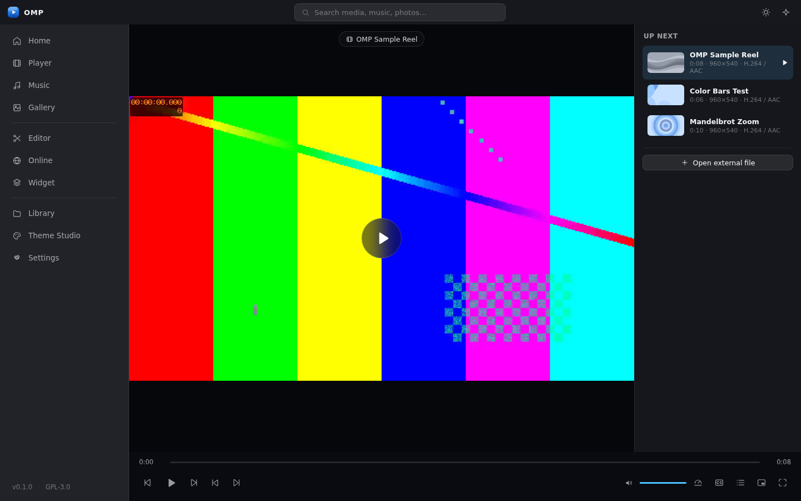

OMP owns the interface and experience — and reuses proven media engines so playback just works.
Video and music with playlists, subtitles, multiple audio tracks, playback speed, frame stepping and hardware acceleration where available.
Images, folders, thumbnails, search, metadata, zoom, rotation and slideshows — with an incremental, cancellable library scan.
Trim, crop, shapes, arrows and text overlays with keyframes, undo/redo and editable .ompj projects. Real FFmpeg exports.
Album artwork, playlists and internet radio — plus a tiny floating player that keeps music going even with the main window closed.
A dedicated YouTube experience, YouTube Music where supported, internet radio and authorized IPTV. Zero OMP-inserted ads.
Dark, light and system themes, five tasteful accent colors, adjustable transparency and a Reduced Effects mode for low-end hardware.
OMP detects your Windows generation and selects the right window material explicitly — never the same settings everywhere.
Mica on the main window where appropriate, plus carefully designed translucent surfaces. Mica incorporates your desktop wallpaper without stealing focus from content.
Its own Acrylic/blur treatment with a custom translucent fallback where the effect is unsupported — because Windows 10 and 11 never render the same way.
No continuous animated backgrounds, no unnecessary blur, no demanding visualizers — one toggle for low-end machines.
Benchmarked against a dual-core CPU with 4 GB RAM and integrated graphics — on both Windows generations, independently.
Every phase ships a working deliverable with a clear exit condition.
Tauri shell, native window-effects module and the playback adapter — proven before anything is built around it.
Main interface, file picker, playback controls, playlists, subtitles, keyboard shortcuts and the media-engine adapter.
SQLite library with an incremental, cancellable scanner, engine-extracted metadata, one-frame thumbnails and resume-everywhere — zero playback stutter, zero idle disk activity.
Window material detaches during playback, backdrop blur suspends over live video, hardware decode takes the fast path — and Stats for nerds shows the live decode path so nothing is ever silent.
Real music library with embedded album art and tags, SQLite playlists, internet radio with live now-playing, an always-on-top desktop widget and background playback — close the window, the music stays.
Widget freeze + laggy drag fixed at the root, music failures now show exact engine diagnostics, the Gallery shows real previews of every scanned image, and OMP registers as an Open-with app so you can make it the default player.
The libmpv core now survives empty init (idle=yes), audio runs surface-less so it never depends on the GPU, a built-in fallback engine keeps music alive even when the native DLL is blocked, media keys light up, and the widget learns queue-jump, shuffle/repeat and position memory.
Real editing on the mpv engine: scrubbable trim, corner-handle crop, timed overlays (rect, circle, arrow, text) on a keyframe lane, 40-step undo/redo, .ompj projects that reopen where you left them — and true FFmpeg exports (MP4, WebM, GIF) with live progress and a real cancel.
Dedicated YouTube experience — paste any link or search straight out of the box: OMP bundles yt-dlp, so no API key is needed and healthy installs play YouTube (and 1000+ other sites) natively through mpv with hardware decode at a fraction of the embed's CPU. IPTV via standard M3U/M3U8 playlists through the native engine, radio wired to the live audio session, code-split screen. Search needs nothing at all now — the in-built YouTube interface runs straight from the shell, no key, no extractor. And when antivirus breaks a bundled component, the new Engine & tools repair center re-downloads it with one click.
Theme Studio, performance profiling, signed installers and automated GitHub releases.
GPL-3.0-or-later, with dependency notices and build information shipped in every release. OMP contains no advertising and no tracking. Format support is published as a tested matrix — playing, editing and exporting are documented per format.